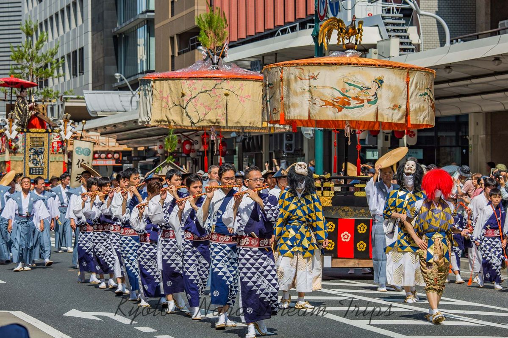
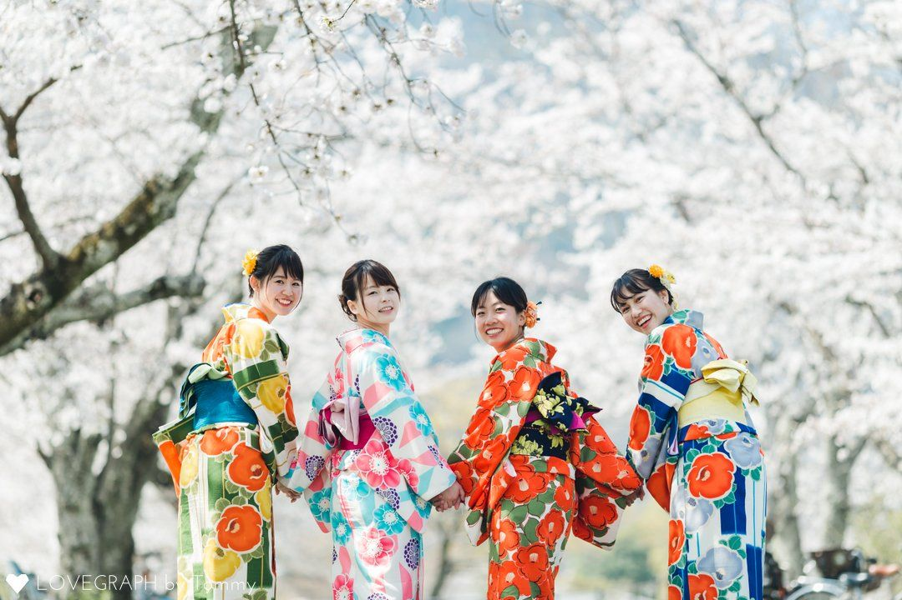
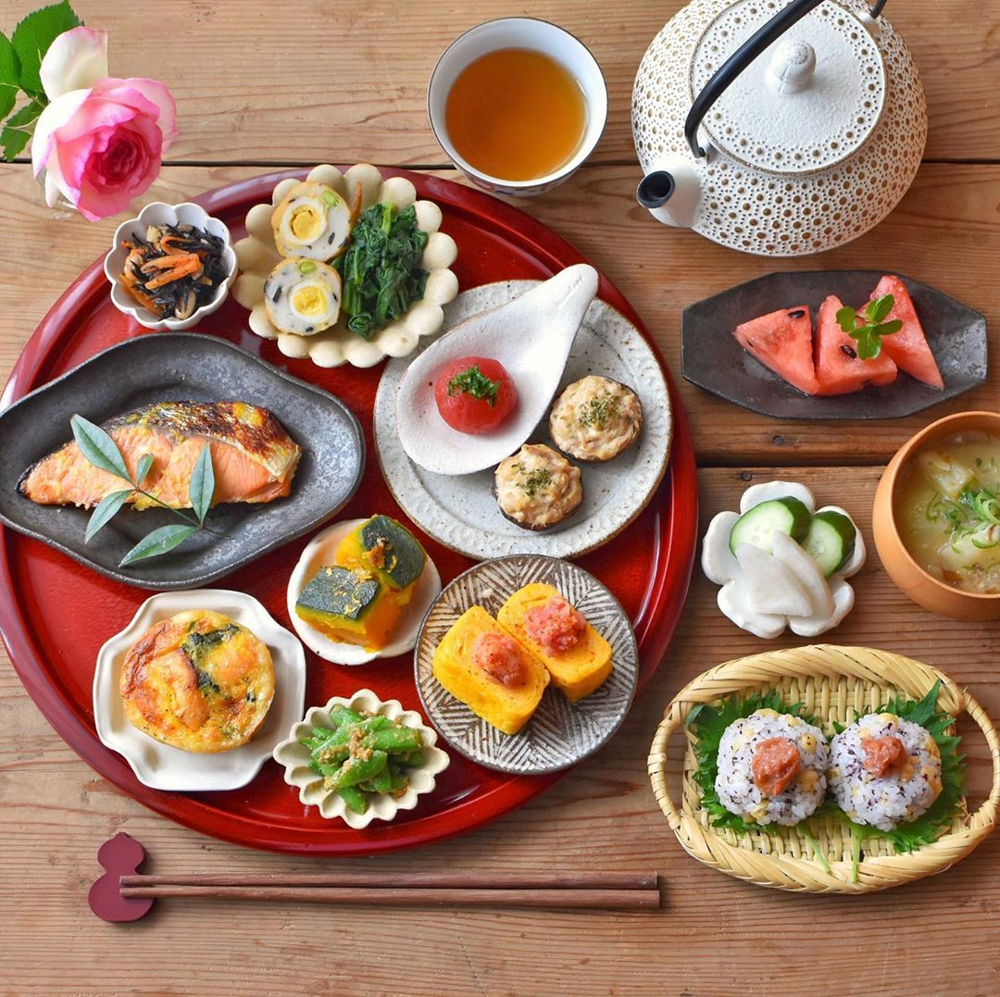
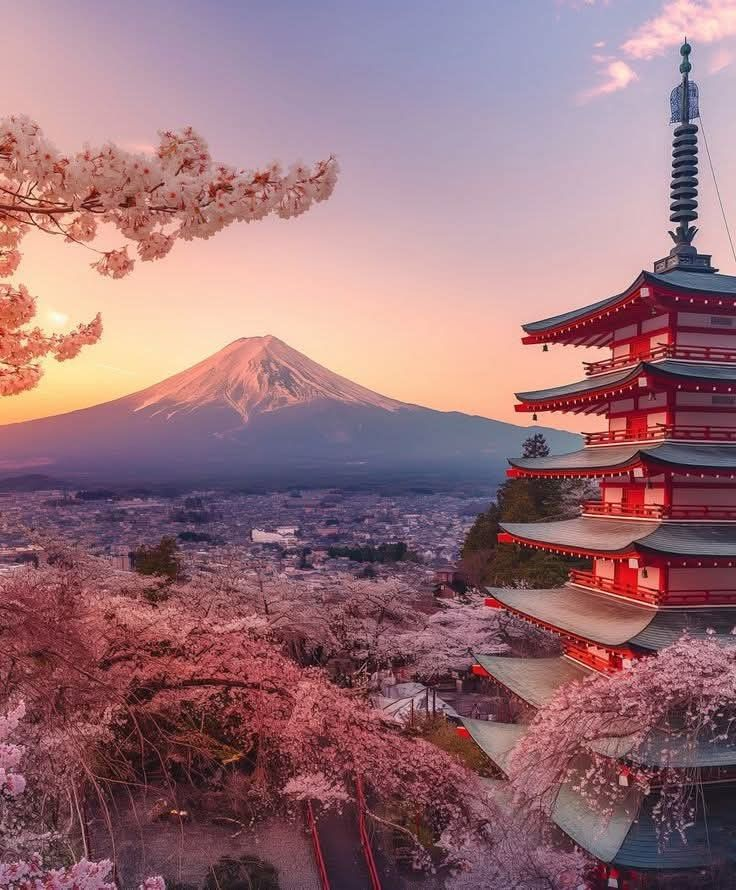
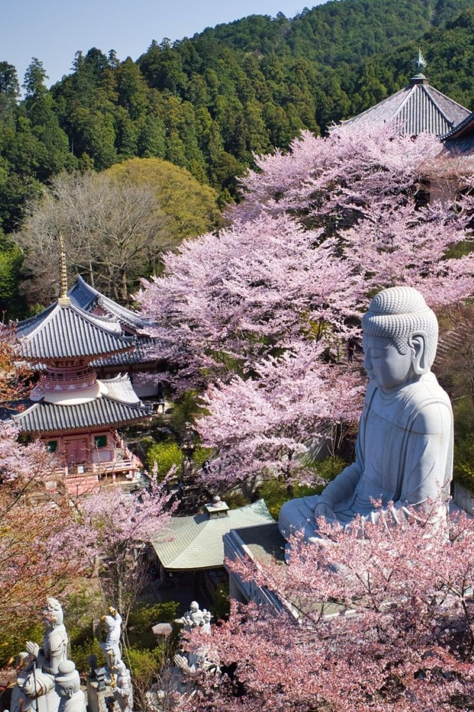
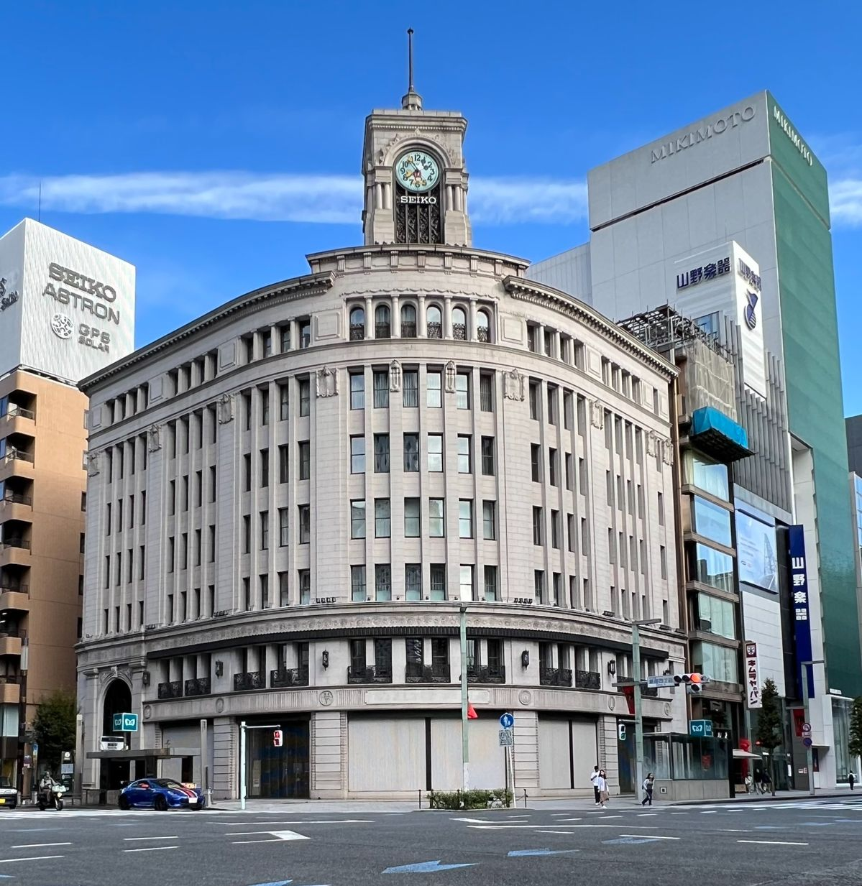

The Rhythm of Japan
Discover ancient traditions, stunning landscapes, and modern marvels in the Land of the Rising Sun
Experience the Culture of Japan

Heritage of the Rising Sun
Japan's culture blends ancient traditions with vibrant celebrations, where Shinto festivals light the streets with music,deance, and color. Communities gather to honor the gods,carrying mikoshi and performing rituals that unite spirituality with joy.Alongside tea ceremonies,calligraphy, and cherry blossoms, these moments reveal the soulful essence of Japan.

Lovingly People
The Japanese are known for their politeness, discipline, and strong sense of community, where respect for others is at the heart of daily life. Their customary greeting, a gentle bow, reflects humility and consideration, while their hospitality (omotenashi) shows genuine care for making others feel welcome. Blending perseverance with kindness, they embody a character that is both disciplined and deeply warm.

Culinary Treasures of Japan
Freshness and balance lie at the heart of Japanese cuisine, where simple ingredients are elevated into artful dishes. Sushi, ramen, and miso soup highlight natural flavors, while rice and seasonal vegetables remain essential staples. Guided by the philosophy of washoku, meals are designed to create harmony in taste, nutrition, and presentation, making every dish both nourishing and beautiful.
Featured Destinations
Explore Japan's most captivating locations

Mount Fuji
Japan's iconic sacred mountain offering breathtaking views and spiritual experiences. Perfect for hiking and photography enthusiasts.

Kamakura
Ancient capital filled with historic temples, the famous Great Buddha statue, and serene bamboo groves perfect for contemplation.

Himeji Castle
UNESCO World Heritage site featuring Japan's finest original castle architecture with elegant white walls and stunning cherry blossoms.

Ginza
Tokyo's premier luxury shopping district featuring high-end boutiques, exquisite dining, and sophisticated nightlife experiences.

Naoshima
Art island paradise featuring world-class contemporary museums, outdoor sculptures, and unique architectural installations.